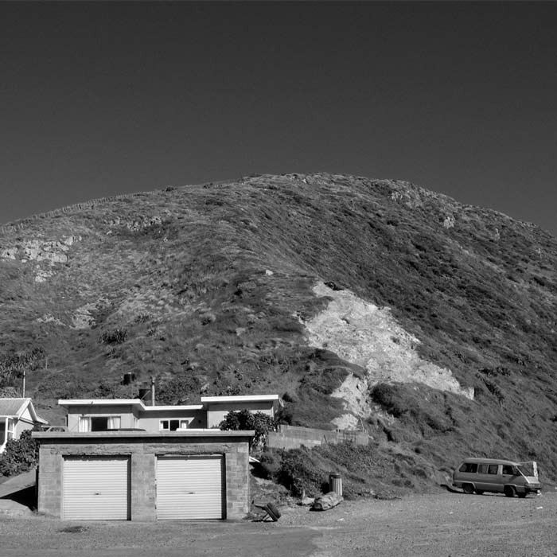
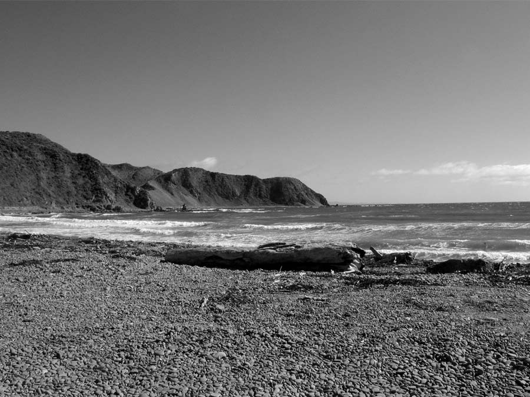
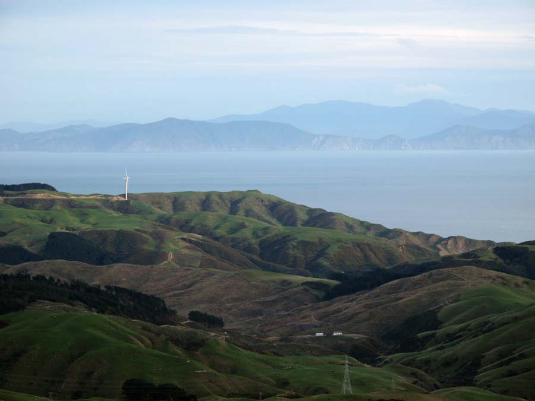
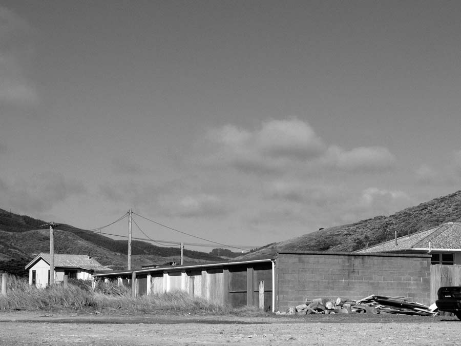
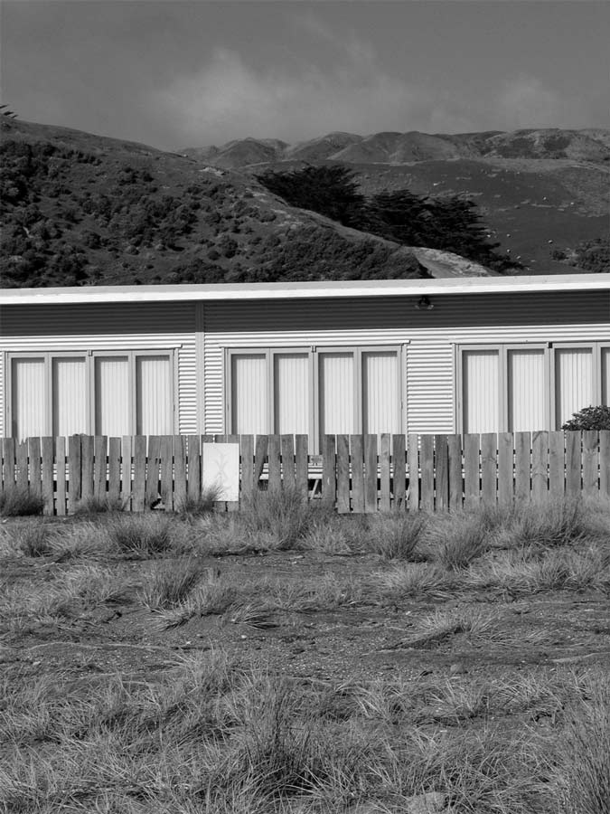
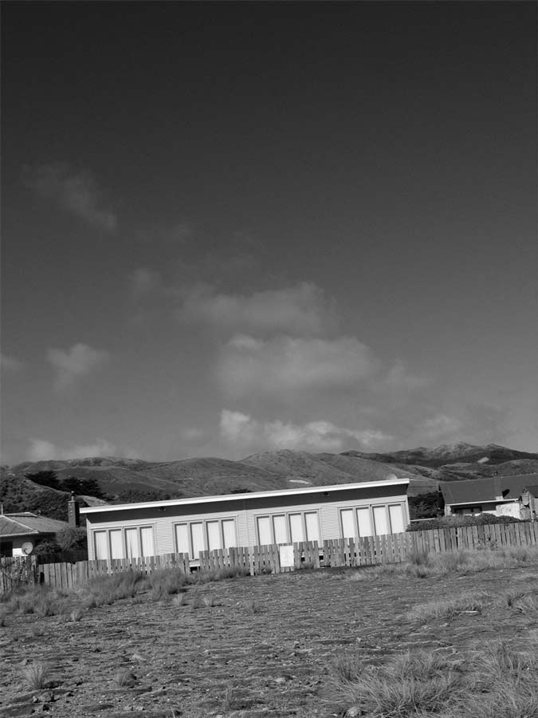
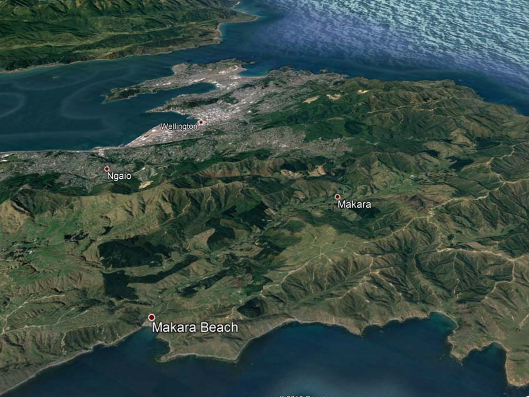

Makara Beach
Located in Wellington's south west

Makara, officially Mākara, is a locality located at the western edge of Wellington, New Zealand, close to the shore of the Tasman Sea.
The suburb is named after the Makara Stream
(mā is Māori for white, kara is a kind of greywacke stone).
With winding road access from Karori or Ohariu, Makara is a rural area with sparse development.
{kind=link}

View of the Beach

Meridian Wind Farm

Township

Local Houses

Local Houses
In the nineteenth century there was a small amount of gold-mining at Terawhiti Station but no large-scale workable deposits were ever found. Tunnels associated with mining activity still exist on the hillside.
In 1921 Makara War Memorial was unveiled, built in memory of local residents who died in World War 1.
There are gun emplacements at Fort Opau which still remain. These were built as part of the coastal fortifications of New Zealand due to fears of invasion during the second world war. A small foreshore reserve of sand dunes was bulldozed during this time as it was felt these could be hiding places for an invading army. This destroyed ecosystem is slowly being restored by local community groups.
The Cook Strait Cable comes ashore from the South Island at Oteranga Bay in the suburb of Makara. The HVDC line came into operation in April 1965 and was at the time the worlds largest submarine cable.
In 2007 construction began on Meridian Energy's West Wind farm along Terawhiti Ridge. A temporary wharf was constructed in Oteranga Bay to move turbine parts into the area without going through Wellington's Central Business District. The 62 turbine farm was completed in 2009 and includes a recreation area.
Makara Beach was hit by Cyclone Gita in 2018 and the community and local council have put a plan in place to reduce the effects of climate change since.
In 2019, the name of the locality was officially gazetted as Mākara.
View Larger Map
